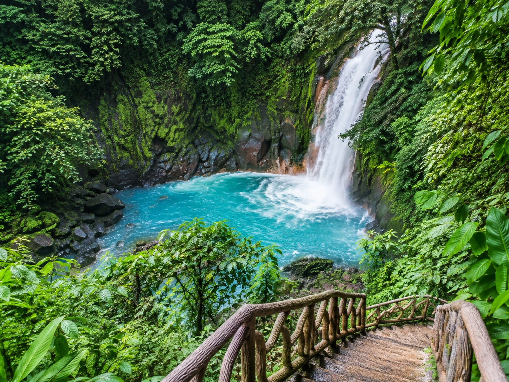

Jamaica if you want more culture with the beach
Jamaica gives you beaches, but it also gives you music, local food, waterfalls, mountain scenery, and a strong sense of place. It can feel more layered than a trip where the resort is the entire experience.
Choose Negril for long beach days, Montego Bay for convenience, or Ocho Rios if you want more excursions.
Aruba or Curaçao if you want something easy and sunny
Aruba is excellent for travelers who want a straightforward resort trip with beautiful water, restaurants, and easy transportation. Curaçao adds colorful architecture, coves, and a stronger explore by car feeling.
Both are good next steps when you want the Caribbean but not the exact same experience as the Bahamas.
Costa Rica if you are ready for more adventure
Costa Rica makes sense if you want the passport trip to include rain forest, wildlife, waterfalls, hot springs, surf towns, and outdoor activities. The trip can still include beach time, but it is usually more active than a resort week.
Stay in fewer regions and enjoy them properly instead of spending the vacation in a shuttle.
Lisbon or Barcelona if you want Europe next
If you are ready to shift from tropical vacations to a city and culture trip, Lisbon and Barcelona are approachable choices. Both give you food, architecture, nightlife, day trips, and the option to add coastal time.
This is a bigger change in travel style, which may be exactly what makes the next passport stamp feel exciting.
Saint Lucia if you still want romantic island energy
Saint Lucia gives you dramatic mountain scenery, beautiful resorts, beaches, and a slower feel. It is a strong choice for couples, honeymoons, or anyone who wants the next island trip to feel visually different from the Bahamas.
The island is hilly and travel times can be longer than expected, so choose the hotel location based on what you actually plan to do.